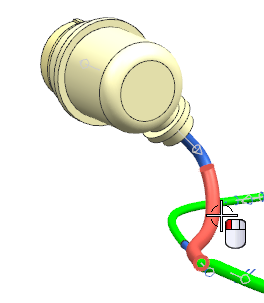

Edit an existing overstock
-
On the Routing Electrical toolbar, from the Edit Stock Drop–down list, select Edit Stock
 to open the Stock Browser dialog box.
to open the Stock Browser dialog box.
-
Select this segment of the routing.

-
In the Stock Browser dialog box, make sure Wrap_0126_mm is highlighted.
-
Click Edit Stock
.
-
Click Specify Overstock.
-
In the Reuse Library group, from the Folder View box, expand:
→Routing Part Library
→Dressings -
Right-click Wrapped and choose Search Children.
Specify an overstock that is made of red vinyl and has a thickness of about .35 mm, and a width of 38 mm.
-
Click Clear All.
-
From the Search Database group, select the following characteristics:
COLOR
=
Red
MATERIAL
=
Vinyl
THICKNESS
=
.3556
WIDTH
=
38.0
-
点击确定。
-
From the Member View list, select Wrap_0152_mm, and then click the middle mouse button.
While you are in the Overstock dialog box, you can edit the length of the overstock.